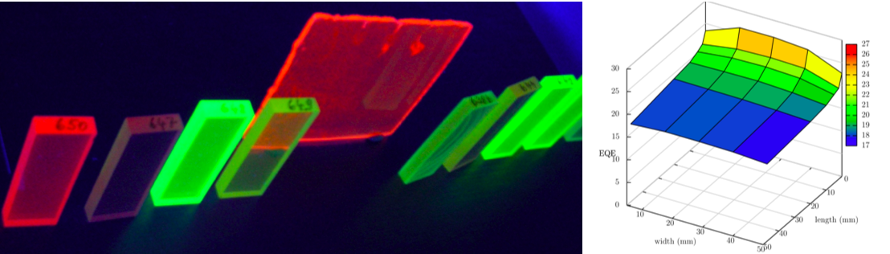

Daniel J Farrell

Research Associate in the Quantum Photovoltaics Group at Imperial College London

About
I am a post doctoral researcher in the Experimental Solid State Physics group at Imperial College London, where I research hot-carrier solar cells, thermodynamics of solar energy conversion and spectral modification with luminescent materials.
Research Interests
- Hot-carrier solar cells
- Thermodynamic modelling of solar energy convertors
- Luminescent solar concentrators
- Nano-materials:
- Quantum dots and rods
- Organic dyes
- Building integrated photovoltaics
- Thin-film optical coatings
- Monte-Carlo optical modelling
Contact
Dr. Daniel J Farrell
Experimental Solid State Physics
Blackett Laboratory,
Imperial College London,
Prince Consort Road,
London SW7 2AZ.
U.K.
e-mail: daniel.farrell@imperial.ac.uk
tel: (+44) - (0)20 7594 7305
Hot-carrier solar cell
Within the framework of the hot-carrier solar cell, thermalisation losses are eliminated by forbidding interactions between charge carriers and the lattice. Energy that would otherwise be lost is stored in the carrier population as heat. Provided that the carriers are thermally isolated from the lattice they may attain a temperature intermediate between that of the Sun and the ambient, and extra energy can be extracted because entropy generation is suppressed.
Luminescent concentrators

Luminescent concentrators being illuminated by an uniform light source (conveniently provided by a laptop screen).
The luminescent concentrator is a non-tracking approach to the concentration of solar energy. One very important feature of the luminescent concentrator is that it collects diffuse light as well as direct. This is significant, especially for high latitudes where the diffuse can account for 60% of the total insolation. The luminescent concentrator aims to reduced the cost-per-watt of generated power. This is achieved by the geometric and photon concentration factors between the top and edge surfaces.
Quantum Dots
Quantum dots are nanoscale crystals of semiconductor materials. One interesting feature of quantum dots is that their optical properties are size dependent. This is because of quantum confinement of the electron and hole wavefunctions. Our group has proposed replacing organic dyes with quantum dots in luminescent concentrators. This has several advantages; emission colour can be changed by changing the particle size, large red-shifts can be produced by controlling the spread in dot sizes and quantum dots should be inherently more stable than organic materials.
Recent publications and talks
- D J Farrell and N J Ekins-Daukes, "Photovoltaic technology: Relay dye boosts efficiency", Nature Photonics 3, 373 - 374 (2009)
- D J Farrell, Wilfried G J H M van Sark, S T Velthuijsen, R E I Schropp, Using amorphous silicon solar cells to boost the viability of Luminescent Solar Concentrators, 23rd International Conference on Amorphous and Nanocrystalline Semiconductors, August 2009 (Download Pre-print).
- D J Farrell, "The next generation of Building Integrated Photovoltaics", Arup Associates, London, (2009).
- Full publication list.
Follow me here...
Quantum photovoltaics group linkedin.com/in/danieljfarrell http://identi.ca/danieljfarrell http://twitter.com/danieljfarrell
My bookmarks
Updated: 5th July 2009